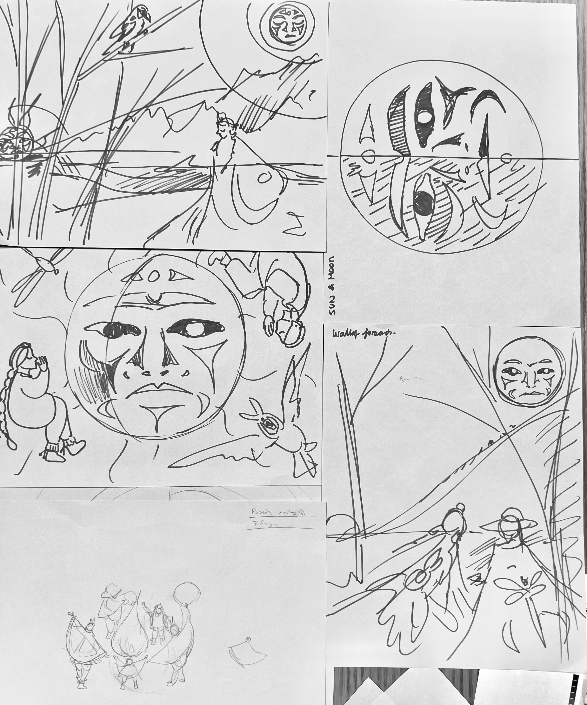
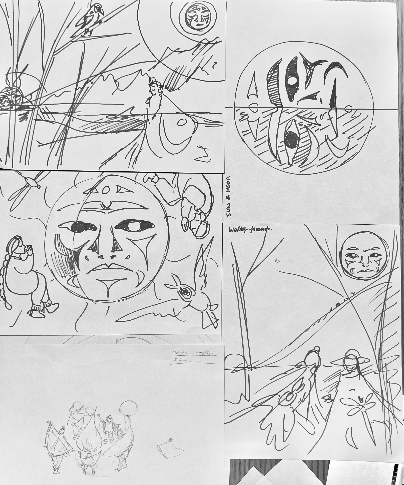

Winter Solstice 2022
2023 versionContext
Starting 2018 VACFSS has moved away from designing Christmas themed celebratory cards to the recognition of Winter Solstice.
Challenge
As a non-Indigenous designer tasked to create the design, I conducted research and gained approval for purchasing 3 books on learning Indigenous Coast Salish art and culture.
My role
I created illustration and visual design of both Winter Solstices appreciation cards design and the organization of the mailing and ordering for the number of cards for the agency.

Process
Sketching
With books on different symbolic meaning, I explores the sun, the moon, and different compositions. There were the Raven, the Eagle, the man in the woods, and the Thunderbird. The start constellation visible, with different name across culture, it's as the 7 sisters here at Coast
Intial Idealization
 

Indigenous Mythology
I chose to include the Thunderbird, the men in the woods,the Engel,and the raven.


Final Design


Impact
I organized the order of 350 cards of our 3 locations, and coordinated mailout of 150 of the cards to our community partners.
Conclusion
I was able to visualize many mythologies I have learned through reading, and gaining the approval of the Indigenous Cultural elders for this design before coordinating the printing and mailout of the greeting cards in time of the Winter Solstice.